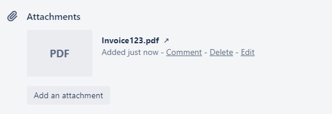
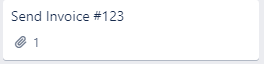

Use Trello to keep track of important files and share them with others.
-
Click the Card.
-
Select Attachment.
-
Select the source of your file.
Trello supports either uploading a file directly or linking a file on a
hosting site. Your choices include:
- A file on your computer
- Another card on Trello
- A file hosted on a Google Drive
- A file hosted on Dropbox
- A file hosted on Box
- A file hosted on OneDrive
- A URL link
-
Click Attach and select the file.
View the updated card to see your attachment.Figure 1: Viewing an Attachment on a Card

Figure 2: Attachment Icon on a Card Preview
